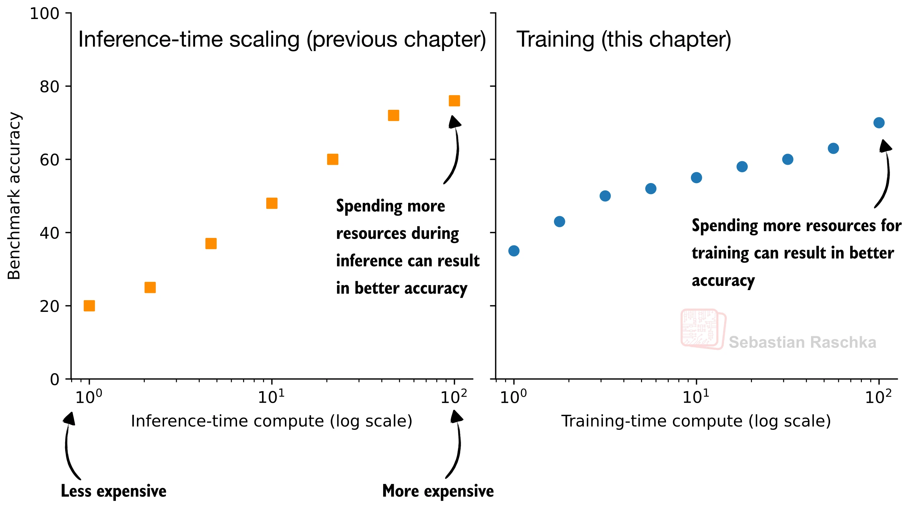
Inference-time scaling spends more compute per generated answer (sampling, voting, self-refinement). Training-time scaling spends more compute during training itself — reinforcement learning is exactly this, and is this deck's focus. In practice, the two are combined: RL-trained models still benefit from inference-time techniques applied on top.
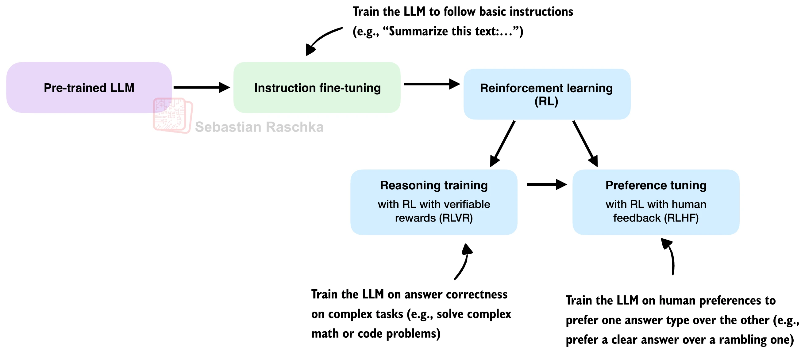
RL is applied as a post-training stage, typically after instruction fine-tuning. It then splits into two distinct uses: RLVR trains on answer correctness for complex tasks like math or code; RLHF trains on human preferences between response styles. Reasoning-focused RL can also be applied directly to a base model — weaker overall, but a simpler setting for isolating what RL alone contributes (this is how DeepSeek-R1-Zero was trained).
Optimizes next-token prediction — build general knowledge and language ability by predicting the next token given everything before it.
Optimizes sequence-level objectives — refine model behavior using a signal defined over the whole generated response, such as answer correctness or human preference, not any single next token.
This shift — from scoring individual tokens to scoring entire responses — is what the rest of this deck unpacks concretely, through GRPO.
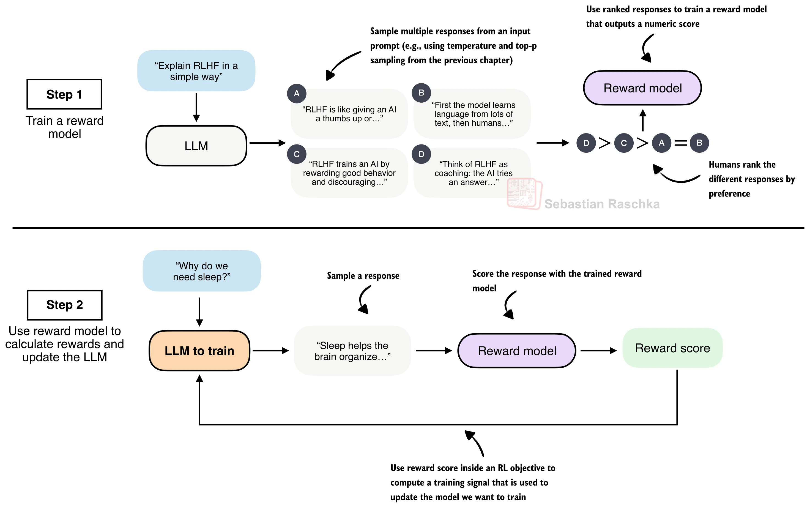
Introduced in the 2022 InstructGPT work — the key step that turned GPT-3 into the original ChatGPT. Unlike pretraining and SFT, which optimize next-token prediction, RLHF optimizes the model based on human preference labels over its own responses — typically via a separately trained reward model that scores full responses, which the policy is then updated against.
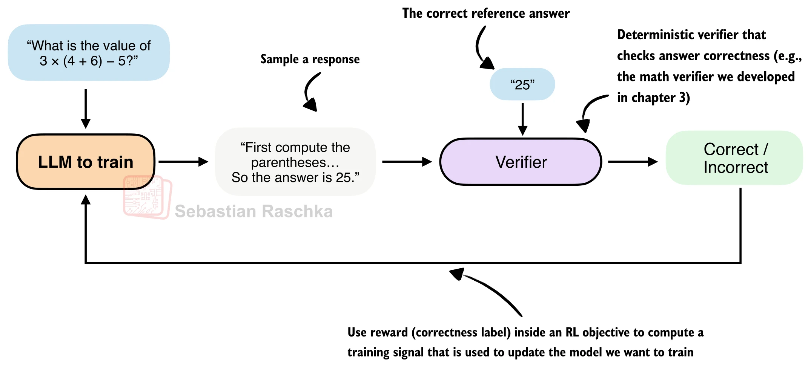
RLHF's reward model is itself a large, expensive-to-train LLM. RLVR replaces it with an automatically verifiable, deterministic reward — e.g. checking whether a math answer is correct, or whether code compiles and passes tests. DeepSeek-R1 (2025) popularized this approach, achieving strong reasoning without any human preference data or learned reward model. This deck focuses on math-based verification, but the same idea extends directly to code verification.
RL for LLMs updates the model — called the policy — using a policy gradient algorithm. Proximal Policy Optimization (PPO) is the standard choice for RLHF and works for RLVR too. DeepSeek instead used a simpler algorithm for training DeepSeek-R1: Group Relative Policy Optimization (GRPO), first introduced in DeepSeekMath.
PPO trains a separate LLM to estimate a value function. GRPO needs no such model — it derives its learning signal purely from relative comparisons within a group of sampled responses to the same prompt. One fewer large model to train and hold in memory during RL.
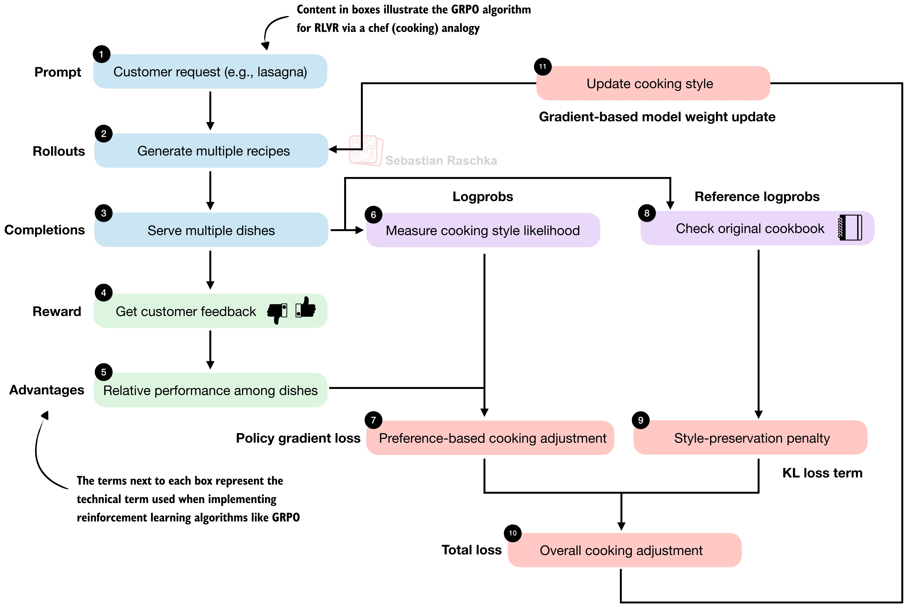
A chef (the policy) cooks several variations of a dish (rollouts, also called completions) from the same recipe (prompt), tastes and scores each (rewards), and adjusts technique based on which dishes did better or worse than the average of the batch (advantages) — not against some fixed external standard. This relative, within-group comparison is the "group relative" in GRPO.
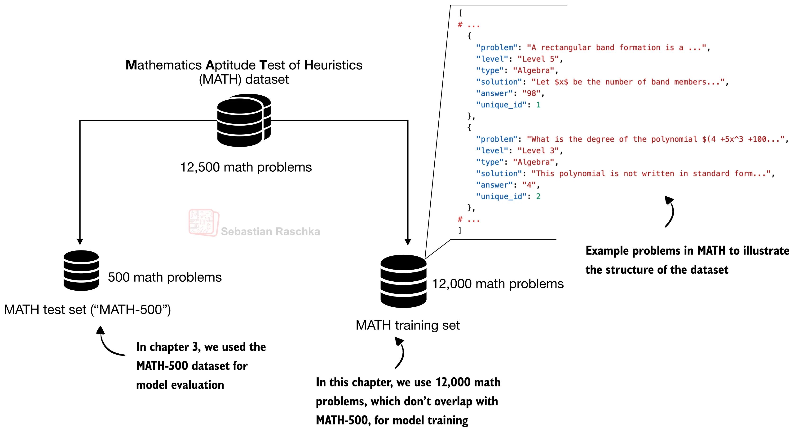
A non-overlapping training split of the MATH dataset, explicitly excluding the MATH-500
examples reserved for evaluation. Only the problem and answer fields
are used — the solution field is deliberately withheld, so the model must explore
its own solution paths rather than imitate a fixed one.
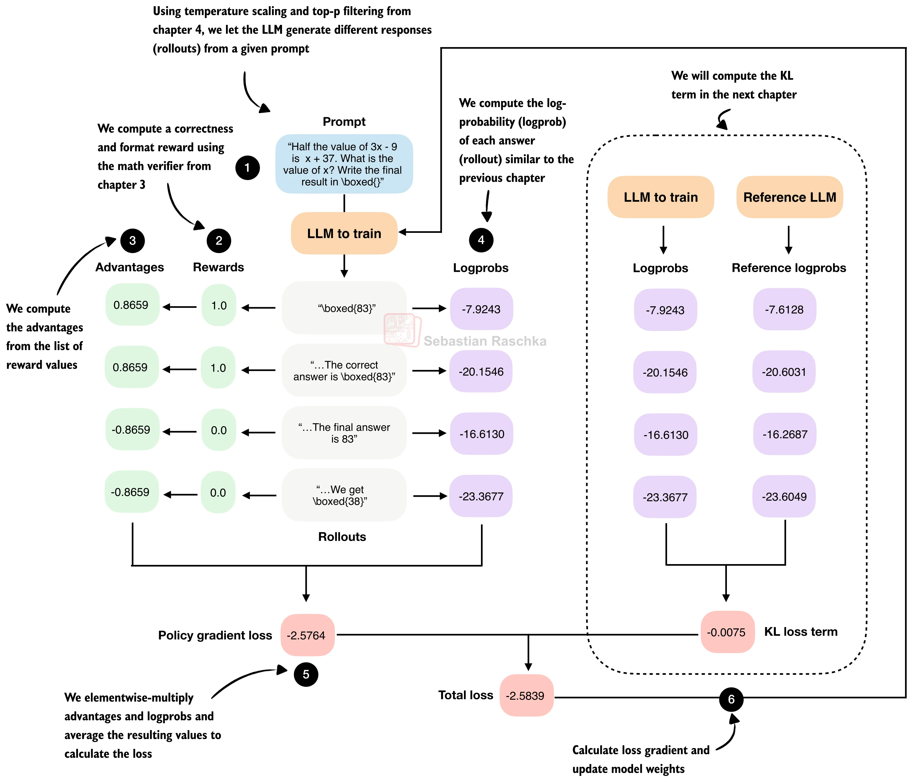
One real worked example, four rollouts for the prompt "Half the value of 3x−9 is x+37. What is x?" The next several slides walk through exactly how each number here is produced, stage by stage.
Each rollout is scored by an automatic, deterministic verifier — the core idea of RLVR.
Here the reward is correctness, with an implicit format
requirement: a reward of 1.0 is given only if the final answer appears inside
\boxed{} and is correct; otherwise the reward is 0.0.
| rollout | reward |
|---|---|
| "\boxed{83}" | 1.0 |
| "…The correct answer is \boxed{83}" | 1.0 |
| "…The final answer is 83" (not boxed) | 0.0 |
| "…We get \boxed{38}" (wrong answer) | 0.0 |
DeepSeek-R1's authors also tried scoring intermediate reasoning steps with a process reward model — this was unsuccessful, and they found it better to train on final-answer correctness alone, with no intermediate rewards.
The "group relative" step: each rollout's reward is normalized against the mean and spread of rewards within its own group (the rollouts sampled for the same prompt):
$r_i$ — reward of the $i$-th rollout; $\mu_r$ — mean reward across the group; $\sigma_r$ — standard deviation of rewards across the group; $\epsilon$ — a small constant preventing division by zero.
Some prompts are easy (most rollouts already correct) and some are hard (most wrong) — a raw reward of 1.0 alone doesn't say whether a rollout was impressive. Subtracting the group mean asks a sharper question: did this rollout beat its siblings on the very same problem? Dividing by the group's spread then puts every prompt's signal on a common scale, so one unusually spread-out group can't dominate training just because its raw rewards happened to vary more.
If every rollout in a group gets the same reward — all correct, or all wrong — then $r_i - \mu_r = 0$ for every $i$. The model receives no update in that step. This is a feature: once every sampled answer is already correct, there is nothing left to learn from that prompt.
| rollout | reward $r_i$ | advantage |
|---|---|---|
| "\boxed{83}" | 1.0 | 0.8659 |
| "…The correct answer is \boxed{83}" | 1.0 | 0.8659 |
| "…The final answer is 83" | 0.0 | −0.8659 |
| "…We get \boxed{38}" | 0.0 | −0.8659 |
$\mu_r = 0.5$; the sample standard deviation ($\div (N{-}1)$, not $\div N$) gives $\sigma_r = 0.5774$, so $(1.0-0.5)/0.5774 = 0.8659$ — confirmed by direct computation, matching the figure exactly. Note some GRPO variants (e.g. Dr. GRPO) argue against dividing by $\sigma_r$ at all, since it can overweight low-variance groups.
A familiar quantity, the average per-token log-probability of the answer:
$y_1,\dots,y_T$ — tokens of the generated response, length $T$; $y_{<t}$ — tokens generated so far; $x$ — the input prompt; $W$ — the model's weight parameters. Averaging over $T$ length-normalizes the score, which is standard practice for comparing answers of different length.
GRPO assigns one reward and one advantage to an entire rollout — to scale the gradient correctly, the log-probability must reflect the likelihood of the full sequence, obtained by summing, not averaging, the per-token log-probabilities. Averaging here would implicitly rescale the learning signal by response length and distort the update.
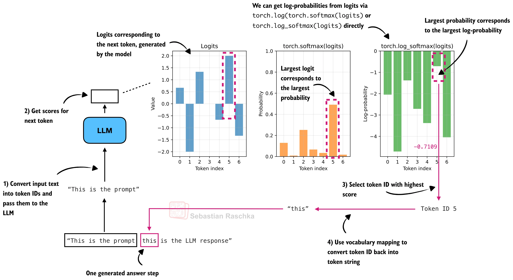
At each generation step, the model outputs one logit per vocabulary token. torch.log_softmax(logits)
gives the log-probabilities directly (equivalent to, but more numerically stable than,
torch.log(torch.softmax(logits))). The sequence-level log-probability from the
previous slide is just the sum of these values, one per generated token.
$N$ — number of rollouts in the batch; $y_1^{(i)},\dots,y_{T_i}^{(i)}$ — tokens of the $i$-th rollout; $x^{(i)}$ — its prompt; $p_W$ — the policy (student model), parameterized by weights $W$; $A_i$ — the advantage of the $i$-th rollout. The inner sum is exactly the sequence-level log-probability from two slides ago; the outer average combines advantages and log-probabilities across all rollouts in the batch.
$A_i$ is detached — it is a fixed target, and gradients flow only through the log-probabilities. The loss carries a negative sign because PyTorch optimizers minimize by default, while this objective should be maximized.
This product is not arbitrary — it comes from asking how to increase expected reward when the only thing we control is a probability distribution we can sample from, but not differentiate through directly (sampling a token is not a differentiable operation):
This identity (the "score function" or REINFORCE trick) turns a gradient of an expectation into an expectation of reward times the gradient of a log-probability — something we can compute. GRPO's loss is a Monte Carlo estimate of the right-hand side, using the $N$ sampled rollouts as samples from $p_W$ and their advantages $A_i$ standing in for $A(y)$.
Think of $\log p_W(y_i)$ as a dial gradient descent can turn for each rollout. If $A_i>0$ (better than the group average), the update turns the dial up — that exact response becomes more likely next time. If $A_i<0$, the dial turns down — less likely. The size of $|A_i|$ sets how hard the dial is turned. Concretely, in this batch: "\boxed{83}" ($A=+0.8659$) gets pushed toward a less negative logprob than its current −7.9243; "\boxed{38}" ($A=-0.8659$, the wrong answer) gets pushed toward a more negative logprob than its current −23.3677. This is literally the "reinforcement" in reinforcement learning — strengthen what worked, weaken what didn't, with no target sequence to imitate, only a relative comparison.
| rollout | advantage $A_i$ | sequence logprob |
|---|---|---|
| "\boxed{83}" | 0.8659 | −7.9243 |
| "…correct answer is \boxed{83}" | 0.8659 | −20.1546 |
| "…final answer is 83" | −0.8659 | −16.6130 |
| "…We get \boxed{38}" | −0.8659 | −23.3677 |
$\mathcal L_{\mathrm{PG}} = -\tfrac{1}{4}\sum_i A_i \cdot \text{logprob}_i = -2.5764$ — confirmed by direct computation, matching the figure. Stage 6 backpropagates this loss and updates the model weights, exactly like any other PyTorch training step.
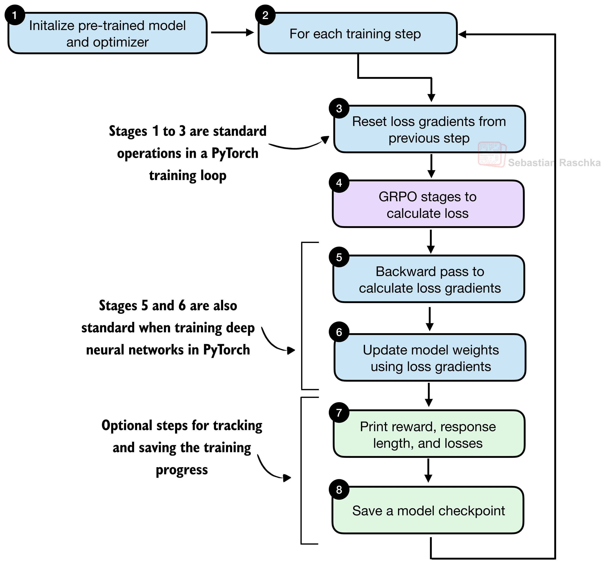
Only the loss computation (purple) is specific to GRPO — resetting gradients, the backward pass, and the weight update are standard PyTorch training-loop operations, identical to training any other neural network.
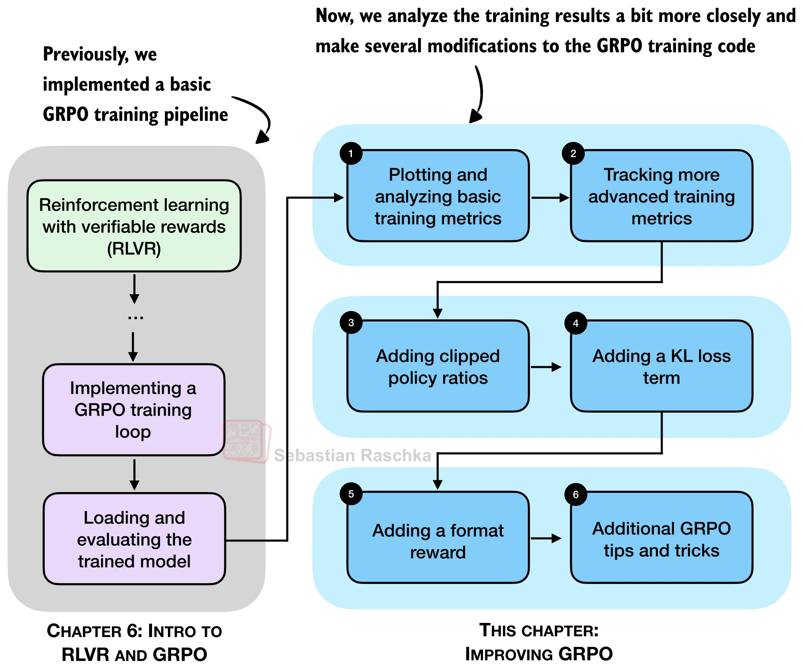
The GRPO pipeline just covered is a working but simplified algorithm. The rest of this deck covers the improvements that make it more stable and effective in practice — better monitoring, clipped policy ratios, a KL regularization term, and an explicit format reward.
By construction, the mean advantage across a group is always exactly 0 — tracking it is mostly a sanity check that the normalization code is correct. The standard deviation of the advantages is the genuinely informative signal:
A well-scaled gradient signal — healthy, stable updates.
A vanishing signal — often happens once rewards collapse to all-same values.
Overly spiky updates that can destabilize training.
Best read alongside the average reward: a reward average near 1.0 looks alarming (vanishing signal) but is actually good news — it means the model is already getting everything right.
Entropy measures how uncertain the model is when producing the next token.
Probability mass spread over many tokens — good for exploration, but too high means the model is close to random.
Almost all mass on one token — more deterministic, but very low entropy can signal collapse: the model repeating the same or near-identical outputs.
≈0–0.5: one token dominates, near-deterministic. ≈1–2: mass shared among a few tokens, typical during stable training. ≫ 2 (approaching $\log(7)=1.9459$): highly uncertain, close to random.
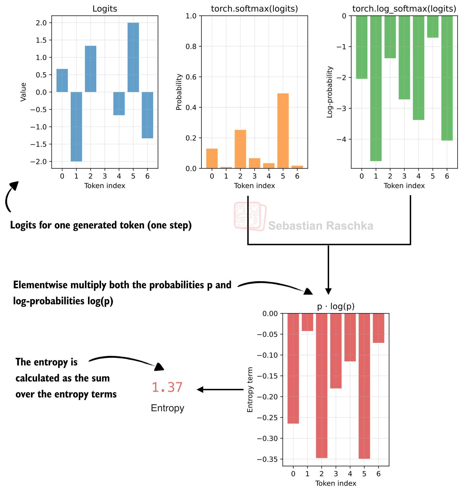
$H = -\sum_v p_v \log p_v$ — probabilities and log-probabilities are multiplied elementwise, then summed (with a sign flip). In GRPO, the per-token entropy is averaged over every answer token in a rollout to get one entropy value per rollout, tracked over training just like the reward average.
The clipped policy ratio measures how much the current policy differs from an earlier version of itself, by comparing sequence log-probabilities computed before an update step ("old") against those computed after it ("new") — borrowed directly from PPO (Schulman et al., 2017).
The advantage is then scaled by this (clipped) ratio instead of being used directly, limiting how much any single rollout can move the policy in one update. DeepSeek-R1 used $\epsilon=10$ (very weak clipping); other RL pipelines commonly use a much tighter $\epsilon=0.1$.
A group has only a handful of rollouts — often just 4–8. By pure chance, one of them can end up looking dramatically more likely under the updated policy than it did under the old one. Left unchecked, that single noisy sample could dominate the entire update. Clipping acts like a seatbelt: a good rollout can still pull the policy toward it, but no single sample is allowed to pull it too hard in one step.
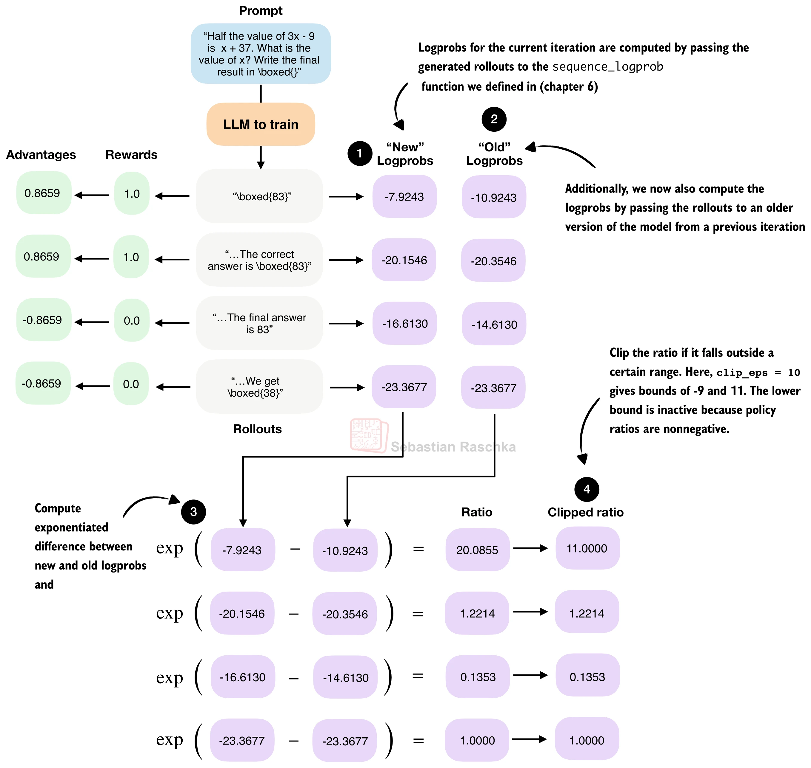
The first rollout's ratio of 20.09 gets clamped down to 11.0 — a case where the updated model became dramatically more confident in that rollout than the reference version was, exactly the kind of large, destabilizing jump clipping exists to contain.
Different GRPO variants disagree on whether the policy ratio should be computed per token or per full sequence:
| paper | level | notation |
|---|---|---|
| DeepSeekMath GRPO (2024) | Token | $r_{i,t}(\theta)=\pi_\theta(o_{i,t}\mid q,o_{i,<t})\,/\,\pi_{\theta_{\text{old}}}(o_{i,t}\mid q,o_{i,<t})$ |
| DeepSeek-R1 GRPO (2025) | Sequence | $r_i(\theta)=\pi_\theta(o_i\mid q)\,/\,\pi_{\theta_{\text{old}}}(o_i\mid q)$ |
| DAPO (2025) | Token | $r_{i,t}(\theta)=\pi_\theta(o_{i,t}\mid q,o_{i,<t})\,/\,\pi_{\theta_{\text{old}}}(o_{i,t}\mid q,o_{i,<t})$ |
| GSPO (2025) | Sequence | $s_i(\theta)=\big(\pi_\theta(y_i\mid x)\,/\,\pi_{\theta_{\text{old}}}(y_i\mid x)\big)^{1/|y_i|}$ |
The Kullback–Leibler (KL) divergence measures how far the current policy has drifted from a fixed reference policy — the original model at the start of training. Adding it to the loss acts as a regularizer, discouraging updates that boost reward while also sharply increasing divergence from the reference.
Chasing reward with no constraint can lead a policy to degenerate strategies that score well on a narrow verifier while wrecking its general fluency and coherence — a form of reward hacking. The KL term keeps the policy tethered to a version of itself that could still write ordinary, coherent text, trading some reward-chasing freedom for protection against drifting into gibberish.
Clipped ratios bound the size of a single update step. The KL term instead penalizes long-term drift across many steps — the two address complementary risks. In DeepSeek-R1, the reference model itself is periodically refreshed, every 400 steps, to the most recent policy.
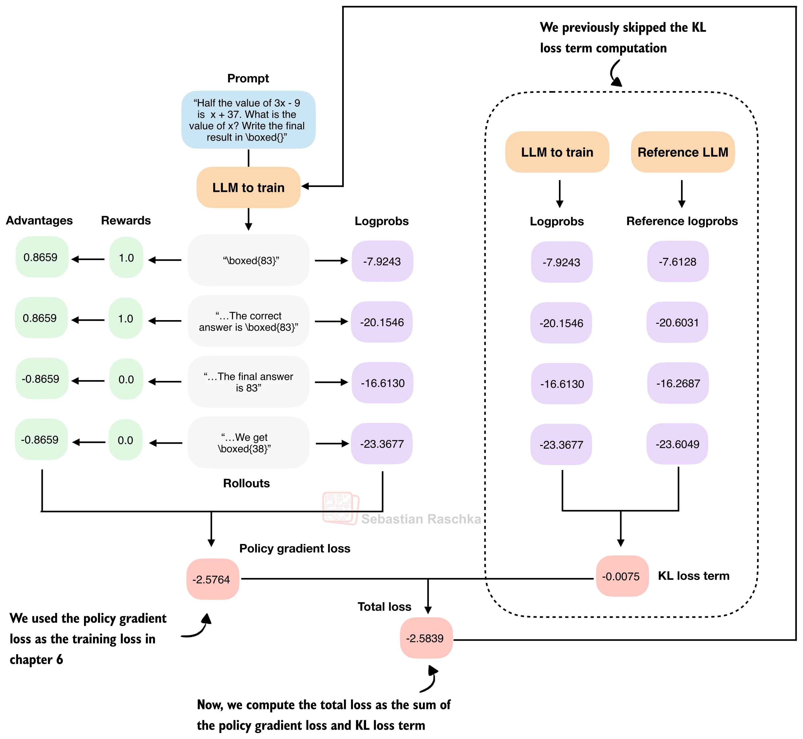
$\text{kl\_loss} = \text{kl\_coeff}\times\text{mean}(\text{logprob}_{\text{new}} - \text{logprob}_{\text{ref}})$, computed on the exact same generated tokens under both models. The total loss is simply the policy gradient loss plus this KL term: here, $-2.5764 + (-0.0075) = -2.5839$.
Adding a naive KL term to real GRPO training caused the run to collapse shortly after step 50 — the model started outputting non-sensical text and random tokens. Two compounding causes:
The KL term is computed on summed log-probabilities, so longer responses automatically produce a larger-magnitude KL term — incentivizing ever-longer outputs and destabilizing training.
Once rewards collapse to all-zero, advantages are all zero and the policy gradient loss vanishes entirely — leaving the KL term as the sole remaining signal, which then pushes the model toward near-uniform, effectively random output.
Several possible fixes exist — length-normalizing the KL and policy-ratio terms, lowering
kl_coeff, reweighting the KL term via importance sampling, or adding a small
format reward so advantages don't collapse to exactly zero.
Multiple independent lines of work — Dr. GRPO, Olmo 3, and DeepSeek V3.2 — report training better without a KL term when training on math data. This also simplifies the implementation and removes the need to keep an extra copy of the reference model in memory during training.
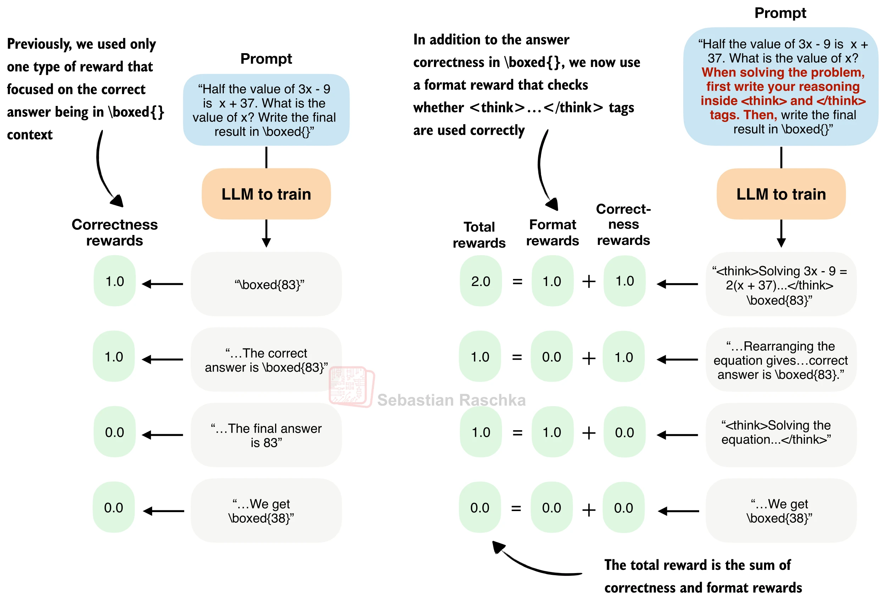
DeepSeek-R1 and Qwen3 use <think></think> tags to separate
intermediate reasoning from the final answer. A simple format reward checks
whether both tags appear, in the right order, and returns 1.0 if so, else 0.0 — the
total reward is the sum of the correctness reward and this format reward.
Intuitively, this is reward shaping: like giving partial credit for showing work in the right
place, it nudges the model toward a useful structure while the correctness reward keeps doing
the heavy lifting on actually solving the problem.
In practice, adding a format reward improved training initially, but performance degraded
after about 100 steps — correlated with the model producing shorter responses. One
explanation: the model was already earning substantial reward just from following the
<think> format, and stopped focusing enough on actually being correct.
Reduce the format reward's weight relative to the correctness reward (e.g. from 1.0 down
to 0.1). Or make the format reward conditional on correctness —
format_reward *= rlvr_reward — so following the format only pays off when the
final answer is also right.
In the months after DeepSeek-R1, many further modifications to GRPO were proposed to improve stability and performance: